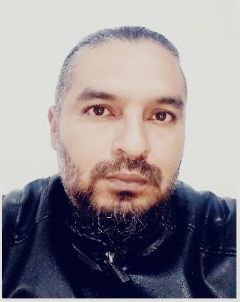

Carrera 10 No 18-48
Tel. 3115662950
E-mail: wijaro88@gmail.com
Bogotá D.C. – Colombia
Ingeniero de sistemas con énfasis en redes, comunicaciones y amplios conocimientos en sistemas de información. Mantenimiento en redes y soporte técnico en general. Conocimiento y desempeño en las herramientas ofimáticas, routing switching y demás tipos de servicios, además de un manejo de ingles con nivel intermedio en lectura, escritura y comprensión. Excelentes habilidades sociales y profesionales, alta tolerancia a la frustración, liderazgo y capacidad para trabajar en equipo.
MASTER EN CODING - DEV.F 2023
INGENIERO DE SISTEMAS 2021
INTERMEDIO 2____________________________________________________________48 horas agosto 2021
INGLES INTERMEDIO 1____________________________________________________48 horas abril 2021
HERRAMIENTAS AVANZADAS DE HOJA DE CALCULO________________________40 horas abril 2021
INSTALACION Y CONFIGURACION DE EQUIPOS DE RADIO ACCESO___________40 horas junio 2016
TIGO (Colombia Móvil S A E S P)
ENERGIA INTEGRAL ANDINA (Proyecto UNE)
Cargo: Tecnólogo B2B
Jefe inmediato: Yecid Zapata
Cargo: Coordinador B2B
Fecha:Junio 2014 - Julio 2018
Funciones: Instalación, configuración y reparación de enlaces de datos y voz por medio de
diferentes
tecnologías manejadas por TIGO-UNE,
como lo son ADSL, HFC, COBRE, RADIO, FIBRA, GPON. Atención y soporte final a usuarios empresariales
y sector
Gobierno De todo el portafolio de servicios de
UNE.
GERMAN CASTANEDA
Contador Publico
Telefono: 311 207 74 92
LINA BERMUDEZ
Ingeniero Telecomunicaciones
Telefono: 300 640 39 65